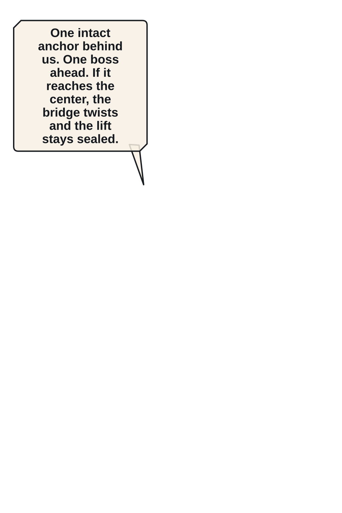
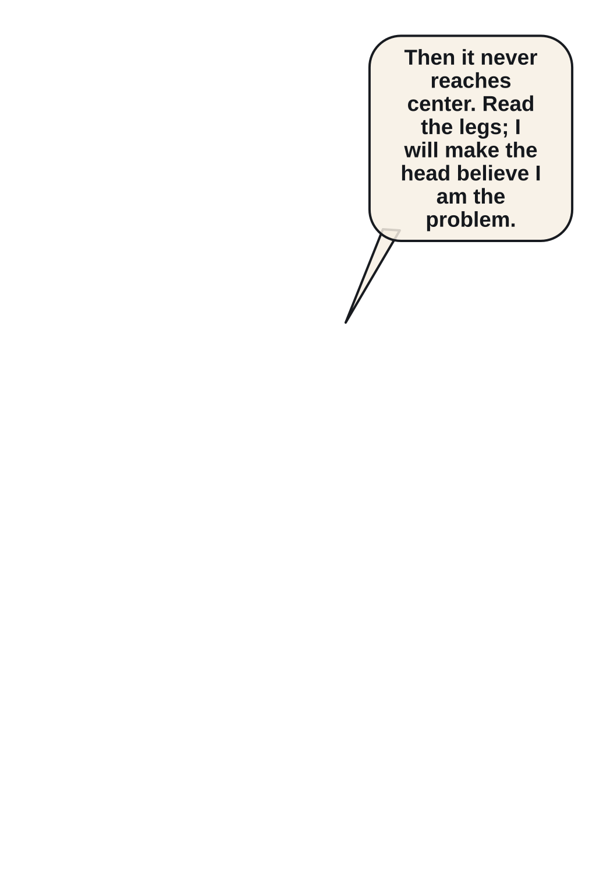
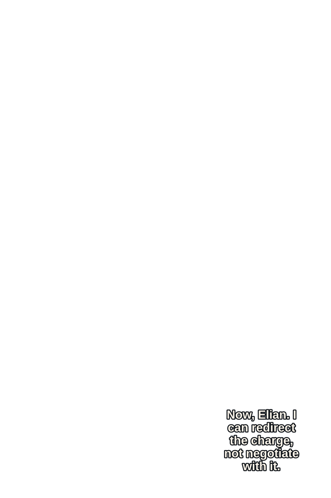
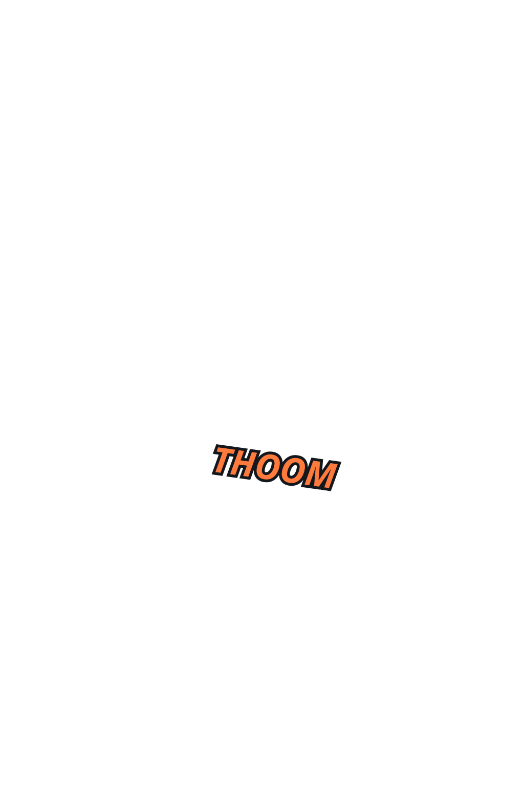
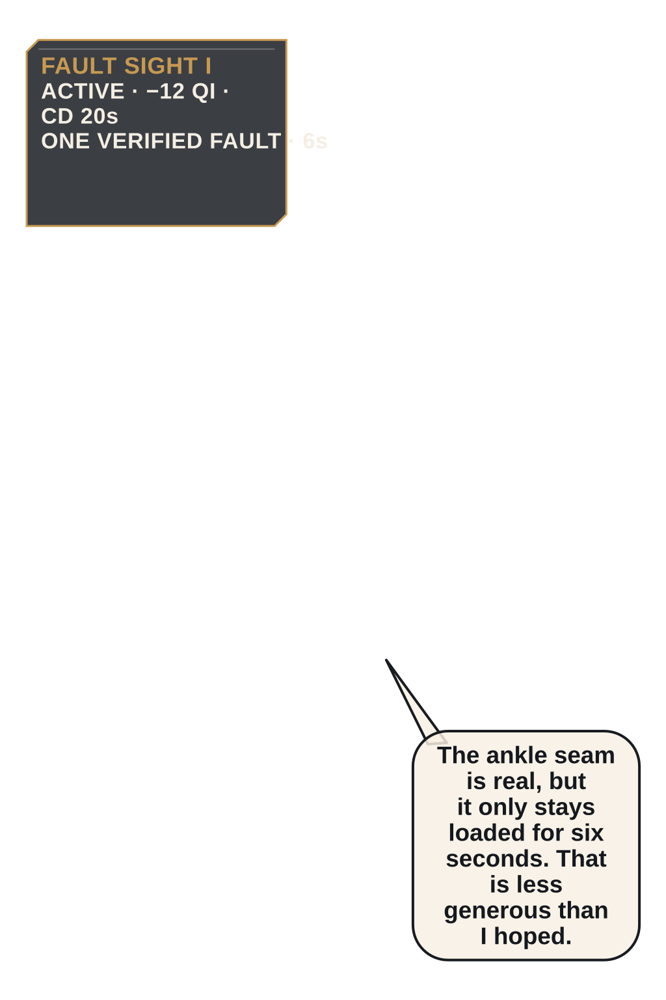
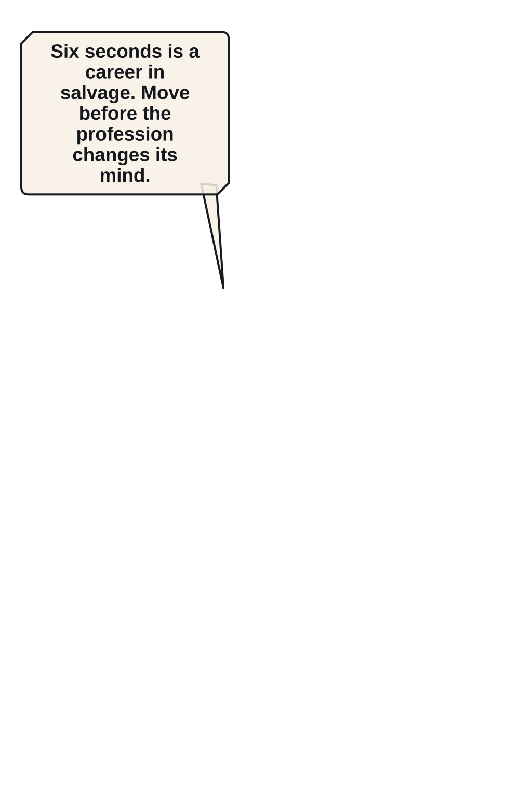
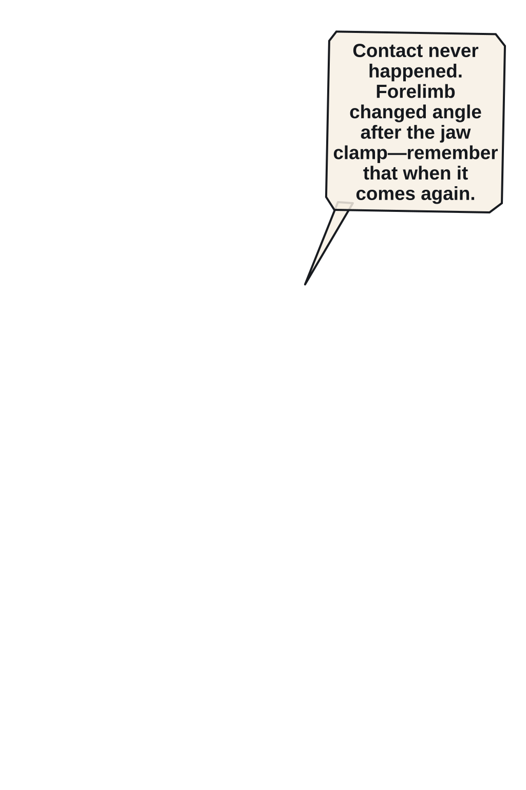
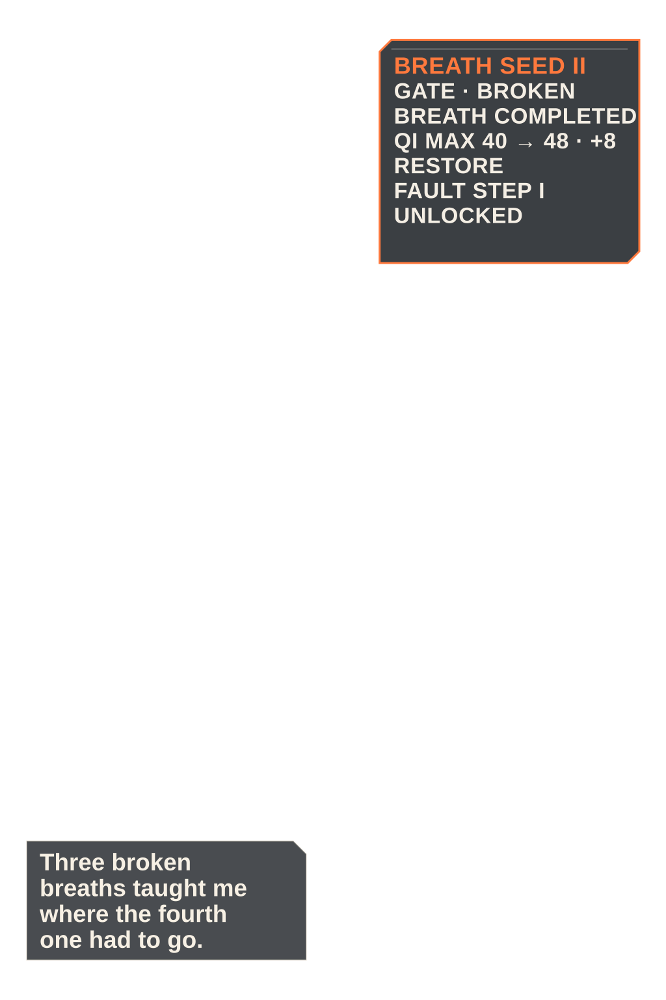
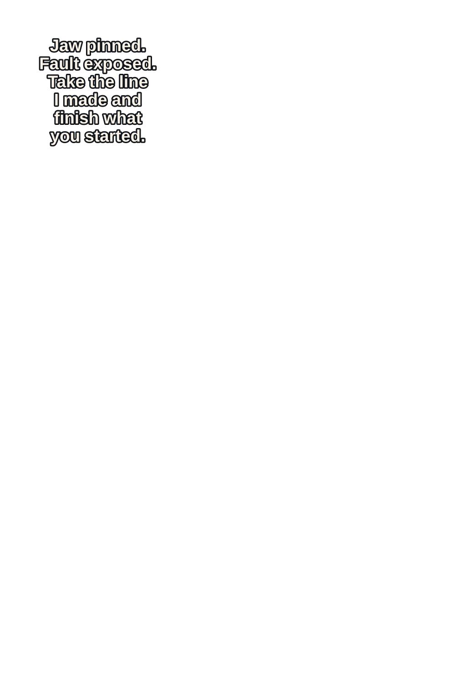

P005 · Side-on geography fixes Belljaw at the right bridge mouth, Mira center-left, Elian behind, and one intact anchor below.
Read in order: geography → intention → initiation → contact/interruption → consequence → response → adaptation → payoff/state.

P005 · Side-on geography fixes Belljaw at the right bridge mouth, Mira center-left, Elian behind, and one intact anchor below.


P006 · Belljaw charges right-to-left and kicks bridge boards upward behind its foreclaws.


P007 · Mira plants the split shield and drives her spear into the charge line.


P008 · Belljaw clamps Mira's spear and wrenches it sideways while her planted boot skids.


P009 · Elian extends one hand; a single ember fault line reveals the boss's ankle seam.


P010 · Elian slides left-to-right beneath the jaw, using the chain rail as one step toward the ankle.


P011 · A ceramic forelimb backhands Elian into a hanging chain before his hookblade lands.


P014 · Breath Seed II opens as one restrained ember ring; Elian coils against the chain with a newly stable breath.


P015 · Mira pins the bell jaw while Elian's Fault Step launches bottom-to-top through the ankle seam in one clear impact.